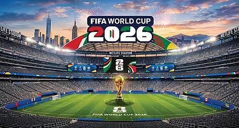

Головна

🌍 Ласкаво просимо до головного цифрового літопису Чемпіонату світу з футболу 2026 року, який прямо зараз об'єднує весь континент завдяки унікальному союзу трьох країн-господарів — США, Канади та Мексики! Цей революційний Мундіаль вже назавжди увійшов в історію як наймасштабніший за всю історію FIFA, адже вперше у фінальній частині змагаються рекордні 48 збірних, які проводять грандіозні 104 матчі. Від історичного старту на культовому стадіоні «Ацтека» в Мехіко, який став єдиною ареною світу, що відкривала три різні Чемпіонати світу (1970, 1986, 2026), до довгоочікуваного канадського дебюту в Торонто та Ванкувері й шаленої відвідуваності на американських супераренах — ми фіксуємо кожен гол, сенсацію та рекорд цього турніру. Наш сайт створено для того, щоб зберегти живі емоції та літопис нової ери світового футболу, тому гортайте розділи меню, вивчайте міста-господарі й досліджуйте великі історичні досягнення ЧС-2026 разом із нами!
Хронологія
📅 Історія створення ЧС-2026 розпочалася ще у червні 2018 року на конгресі FIFA в Москві, де унікальна спільна заявка під назвою «United 2026» від США, Канади та Мексики здобула впевнену перемогу, заклавши основу для першого в історії Мундіалю на території трьох держав. Головною революцією цього проєкту стало історичне рішення FIFA розширити склад учасників з 32 до рекордних 48 збірних, що повністю змінило формат турніру, збільшило кількість матчів до 104 та відкрило двері на світову арену для багатьох нових країн. Наступні вісім років перетворилися на масштабний етап підготовки, протягом якого модернізувалися легендарні стадіони, будувалася сучасна інфраструктура та адаптувалася складна логістика між містами від Ванкувера до Мехіко. Пройшовши крізь роки планування та викликів, цей грандіозний шлях довжиною у вісім років офіційно завершився влітку 2026 року, коли на футбольних полях Північної Америки нарешті стартувало найбільше та найочікуваніше спортивне свято на планеті.
Країни та міста
🌍 Унікальна географія ЧС-2026 об'єднала три могутні північноамериканські нації — США, Канаду та Мексику, кожна з яких привнесла в турнір свою неповторну футбольну культуру та колорит. Сполучені Штати стали головним інфраструктурним ядром Мундіалю, надавши 11 ультрасучасних мега-арен від Нью-Йорка до Лос-Анджелеса, які вражають світ своїми масштабами та технологіями. Канада гучно дебютувала як господар чоловічого чемпіонату світу, подарувавши вболівальникам затишну та гостинну атмосферу стадіонів у Торонто та Ванкувері. Особливе історичне місце посіла пристрасна Мексика з її легендарним стадіоном «Ацтека» в Мехіко — цей культовий футбольний храм став єдиною ареною на планеті, яка прийняла вже третій Мундіаль (після 1970 та 1986 років) і де колись піднімали кубки Пеле та Марадона. Разом ці 16 міст-господарів створили неймовірний трансконтинентальний маршрут, який прямо зараз дарує мільйонам фанатів незабутню подорож різними кліматичними зонами, традиціями та куточками Північної Америки.
Рекорди турніру
📊 Чемпіонат світу 2026 року з перших днів переписав книгу футбольних рекордів, ставши наймасштабнішим і найреволюційнішим турніром за всю історію під егідою ФІФА. Головним історичним досягненням стало розширення кількості учасників до 48 національних збірних, що автоматично збільшило тривалість змагань та подарувало вболівальникам безпрецедентну кількість поєдинків — 104 матчі на 16 суперсучасних аренах. Мексиканський стадіон «Ацтека» встановив вічний абсолютний рекорд планети, ставши єдиною ареною в історії, яка прийняла матчі трьох різних Мундіалів (1970, 1986 та 2026 років). Завдяки унікальній географії турніру, що вперше охопив одразу три країни — США, Канаду та Мексику, було побито рекорди загальної відвідуваності стадіонів та логістичних маршрутів. Прямо зараз, у ці червневі дні 2026 року, на полях Північної Америки фіксуються перші історичні голи від збірних-дебютантів, найшвидші взяття воріт та унікальні бомбардирські досягнення, які назавжди впишуть цей революційний Мундіаль у літопис світового спорту.
Про проект
👋 Вітаємо на сторінці проєкту «Часопис ЧС-2026» — незалежного цифрового архіву та головного футбольного літопису, який створила команда пристрасних спортивних істориків та журналістів спеціально для фіксації кожного кроку цього історичного Мундіалю! Наша мета — без зайвого спаму та складних таблиць зберегти живі емоції, унікальні рекорди та хронологію першого в історії чемпіонату світу на території трьох націй. Ми щодня відстежуємо події від Ванкувера до Мехіко, щоб ви могли читати про футбол просто, цікаво та якісно. Якщо у вас є пропозиції щодо співпраці, цікаві історичні матеріали, або ви помітили неточність у хроніках — пишіть нам на електронну пошту info@wc2026history.com або знаходьте нас у соціальних мережах за тегом @wc2026_chronicles. Дякуємо, що досліджуєте нову еру світового футболу разом із нами!